Главная: расписание, ближайший шаг и документы
02-dashboard.png · реальный браузер Chromium · вымышленные данные

ЦИФРОВОЙ ДЕКАНАТ БУДУЩЕГО · КОНКУРСНЫЙ КОНЦЕПТ
Документ описывает фактический процесс, исходники, проверки и реальные браузерные снимки проекта. Локальная проверка и подготовка развёртывания отделены от ещё не выполненной публичной публикации. Неудачные промежуточные варианты сохранены в истории ниже.
Пользователь поручил реализовать пять направлений: уведомления Telegram/VK, бронирование помещений и оплату общежития, MCP для своей нейросети, RAG внутренних документов и ИИ-помощника. Он отдельно попросил повторить работу команды субагентов. После уточнения пользователь выбрал подготовку подключений без существующих ключей и демонстрационную базу с загрузкой своих документов. Хостинг остаётся вне этой итерации.
Основной агент сначала прочитал код, сохранённые промпты и отчёт предыдущих итераций, затем разделил работу по контракту расширения. Все агенты работали в общем checkout с отдельными областями владения, без дополнительных worktree и без коммитов.
| Роль в этой итерации | Фактическая работа и передача результата |
|---|---|
research |
Изучил mipt.tech и официальные документы Telegram, VK, MCP, Yandex AI и YooKassa. Передал актуальный Yandex endpoint и заголовки, ограничения персонального MCP-токена; написал продуктовые сценарии и инструкцию подключений |
campus |
Реализовал помещения, атомарные брони, отмену, начисления, демооплату и образец квитанции; подготовил адаптер только тестового магазина YooKassa |
channels |
Реализовал привязку по одноразовому коду через проверенный webhook, локальный журнал и сохраняемую очередь событий; добавил экран подключений и управления MCP-токенами |
knowledge |
Добавил пять вымышленных документов, разбиение на фрагменты, русский лексический поиск с цитатами, загрузку TXT/MD/PDF и ограничения обработки PDF в отдельных workers |
assistant |
Реализовал локальные сценарии, уточнение недостающих полей, карточки подтверждения, ответы по источникам и серверный адаптер Yandex AI |
reviewer |
Независимо проверил изоляцию аккаунтов, конфликты и повторы, MCP настоящим SDK, доступность, мобильные экраны и сквозные сценарии; возвращал замечания владельцам модулей |
| Основной агент | Связал модули с сессиями и CSRF, вынес общую логику заявок и подтверждений, реализовал HTTP MCP и stdio-мост, обновил навигацию и выполнил итоговую интеграцию |
Это роли агентов одной среды Codex, а не работа разных заявленных внешних моделей или интервью со студентами. Полные исследовательские ссылки — в FEATURES_RESEARCH.md, режимы и сценарии — в FEATURES_PRODUCT.md, настройки — в INTEGRATIONS.md.
Существенные решения и исправления по обратной связи:
confirmed: true не доказывает человеческий клик: доверенный внешний клиент обязан запросить согласие пользователя.Итоговый npm run verify прошёл целиком: production-сборка, 87/87 серверных результатов (84 сценария и 3 родительские группы), 39/39 браузерных тестов за 2 минуты. Семь новых браузерных тестов включают пять полных сценариев и проверки всех пяти новых разделов на 1440 и 360 px. Автоматических нарушений выбранных WCAG A/AA-правил и горизонтального переполнения на проверенных состояниях нет; это не полная сертификация доступности. Ошибок JavaScript в проверяемых сценариях не было. npm audit сообщил 0 известных уязвимостей, git diff --check прошёл. MCP проверен настоящим SDK по HTTP и через дочерний stdio-процесс; провайдеры проверены только изолированными подставными ответами.
Размер production-сборки: JavaScript 385,91 КБ (gzip 113,37 КБ), CSS 132,88 КБ (gzip 25,65 КБ). Новые зависимости: официальный MCP SDK, Zod и pdf-parse; версии зафиксированы в lockfile, лицензии учтены в THIRD_PARTY.
Пять свежих снимков реального Chromium на отдельной временной базе: кампус, демооплата общежития, поиск с цитатами, каналы и MCP, подтверждение на телефоне. Секреты подключений на снимках отсутствуют. Подробности независимого ревью — в FEATURES_REVIEW.md. Старое видео и снимки ниже остаются историей предыдущих версий.
Пользователь попросил: «Соверши аудит этого проекта, найди слабые места и за что можно снять баллы по критериям», затем — «Исправь эти баги кроме хостинга». Аудит включал чтение исходного задания и кода, сборку, серверные и браузерные тесты, дополнительные реальные действия в Chromium и проверку итогового PDF. Исходный набор прошёл 30/30 серверных результатов и 26/26 браузерных тестов, но дополнительные сценарии обнаружили ошибки вне его покрытия.
В этой доработке работает основной агент Codex; новые субагенты, интервью, внешние модели или пользовательские исследования не заявляются. Хостинг исключён пользователем из объёма работы. Код, проверки и обновление документов выполнены ИИ; человек задал задачу и границы.
| Постановка / проверка | Неудачный результат до исправления | Решение и способ проверки |
|---|---|---|
| Пройти от события к действию | «Ваш документ готов» раскрывал другую заявку; «Вся неделя» открывала один день; «Посмотреть сессию» — дисциплины; эссе — общий раздел оценок | В адресе сохраняются заявка, день, режим недели или сессии. Напоминание об эссе ведёт к его пункту плана. Сквозной тест проверяет реальные клики на 1440 и 360 px, а также обновление страницы |
| Спросить навигатор про завтра, справку и английский | Навигатор отвечал понедельником, сроком эссе и экзаменом по истории соответственно | Специальные намерения проверяются раньше общих слов; относительные даты считаются от демо-дня; предмет уточняется по имеющимся дисциплинам. Неоднозначный или неизвестный предмет вызывает уточнение, а не подстановку другого экзамена |
| Оборвать ответ после успешного сохранения задачи и повторить | Две записи с разными ID; сообщение Failed to fetch |
Клиент сохраняет ключ операции для повтора, сервер хранит его в SQLite. Тест обрывает реальный успешный ответ и проверяет одну задачу; серверный тест повторяет запрос после перезапуска. Сетевые ошибки переведены на русский |
| Отделить текущие баллы от зачёта | У предмета с формой «Зачёт» отображалось «Отлично» без отдельного результата аттестации | Отдельные состояния: ещё не проходил, зачтено / не зачтено, результат экзамена. Старые текущие баллы не считаются доказательством сдачи; обновление базы сохраняет их без изменения. Калькулятор экзамена доступен только для экзаменационных дисциплин |
| Проверить комплект процесса отдельно от репозитория | В 20-страничном PDF не было кликабельных ссылок | Генератор превращает относительные ссылки в абсолютные ссылки на ветку исходников и включает сохранённые промпты приложением. Ссылки и текст PDF проверяются после генерации |
| Повторять демонстрацию общими аккаунтами | После 200 заявок новую подать нельзя | Готовую заявку можно явно перенести в архив: история и скачивание остаются, место в лимите освобождается. Архив защищён сессией и CSRF; чужая заявка недоступна. Тест заполняет лимит только во временной базе |
| Отправить отпуск с пустой причиной напрямую в API | Сервер отвечал 201, хотя форма требовала причину | Сервер требует непустую причину от 10 символов; проверены пустая строка, пробелы, короткий и допустимый текст |
Это исправления воспроизводимых ошибок, а не доказательство удобства на основе интервью. Обновление существующих баз выполняется без сброса заявок, отметок прочтения, личных задач и учебных баллов. Подробные регрессии находятся в серверном наборе и браузерном наборе.
Фактические результаты: production-сборка успешна; npm test — 35/35 результатов (32 сценария и 3 родительских блока); полный npm run test:e2e — 32/32, включая шесть новых браузерных тестов, доступность архива и экраны 360 px. До итогового прогона новый набор выявил нечёткое доступное имя селектора дисциплины и влияние оставленной тестовой задачи на следующий сценарий. Полю задана точная доступная подпись, созданная тестовая задача удаляется в finally; прежние проверки не ослаблены. Дополнительно проверен повтор после повреждённого JSON-ответа: он тоже не создаёт дубликат.
Свежие снимки Chromium сняты на изолированной временной базе: архив заявки, результат аттестации на 360 px, исправленные ответы навигатора. Они добавлены к галерее отчёта. Старые снимки ниже обозначают историю прежних версий.
После первой версии пользователь запросил постоянный обмен находками между исследователями, креативщиком, критиками и разработчиками в ходе работы над улучшениями. Перед изменениями два исследователя независимо проверили доступ: чтение публичных Git-репозиториев Moodle и Canvas прошло успешно, открытые страницы Moodle, W3C и shadcn/ui ответили HTTP 200. В новой среде эти источники доступны; ограничения первого исследования ниже относятся к предыдущему состоянию среды.
Из четырёх идей после критики выбраны две связанные: сохраняемый «Мой план» и переход с главной к конкретному ближайшему делу. Поиск Ctrl+K и заметки к каждой паре отложены. Canvas подсказал разделение личной готовности и официальной сдачи, Moodle — приоритет сроков. Публичные исходники Frappe показали, что название страницы ещё не доказывает наличие готового сценария. Чужой код не копировался. Источники, точные замечания и согласие обоих критиков сохранены в ITERATION_2.md и четырёх исследовательских отчётах, на которые он ссылается.
Реализованы свои задачи с необязательной датой, фильтры, сохранение и отмена отметки готовности, удаление личной задачи с подтверждением, точные ссылки и общий источник данных плана и главной. Учебные сроки и оценки неизменны. Новая функция работает поверх существующей базы без её сброса. На телефоне приветственный блок стал компактнее и сразу показывает конкретное дело; нижняя навигация сохранила «Заявки». Дизайнер проверял реальные экраны, критики независимо проверяли сервер и пользовательские сценарии.
| Проверка второй итерации | Фактический результат |
|---|---|
| Production-сборка | npm run build успешно завершена |
| Сервер | npm test: 30/30 результатов — 27 сценарных подпроверок и 3 родительские группы |
| Браузер | Все 26 тестов проверены: 20 прежних прошли, новый набор — 6/6 после исправления синхронизации тестовых данных |
| Разбор промежуточной ошибки | В полном прогоне было 25/26: тест изменял данные напрямую через API и ожидал, что смена хеша сама перечитает bootstrap. Добавлена перезагрузка только после внешней подготовки данных. Обычное обновление через UI проверено без перезагрузки |
| Изоляция и сохранение | Чужие ID, CSRF/Origin, неизменность учебного источника, старая база, повторный PATCH, перезапуск и отмена отметки проверены отдельным техническим критиком |
| Доступность | 16 автоматических axe-сканирований в общем браузерном наборе; у плана проверены desktop и 360 px, управление фокусом и отсутствие переполнения |
| Материалы | Добавлены 3 настоящих снимка Chromium: 08-planner-desktop.png, 09-planner-mobile.png, 10-action-mobile.png; PDF пересобирается с 10 снимками |
Новые зависимости не добавлены. Видео ниже показывает первую версию; новая функция представлена в свежих снимках и коде. Публичный хостинг не подключён. Исследование велось итеративно во время этой задачи; работа фоновых агентов после завершения сеанса не заявляется.
14 ноября 2026 года пользователь передал конкурсное задание «Цифровой деканат будущего» и попросил привлечь агентов для координации, бизнес-анализа, дизайна, креативных решений, разработки, технического руководства, исследования существующих решений, тестирования и ревью. Полный текст задания сохранён в assignment.txt.
До разработки проверено: репозиторий alexchist/mgimo-vibe-coding пуст, исходного приложения и тестов нет. В среде доступны Git, Node.js/npm и Python. Пользователь отдельно указал: «Коммить все в репозиторий, но не в main ветку». Создана ветка feat/orbita-student-portal.
Пользователь сообщил, что хостинга пока нет, и выбрал подготовку развёртывания. Поэтому публичная доступность и срок работы до 28 ноября остаются задачами публикации, а не следствием успешной локальной сборки.
Разрозненность учебной информации взята из конкурсного задания. Дополнительные интервью или опросы не проводились и не заявляются. ИИ предложил структуру вокруг ближайшего действия студента: расписание и переносы, учебная ситуация, заявки с историей, уведомления и локальный навигатор.
Пять обязательных разделов реализованы в прототипе. Дополнительные функции выбраны потому, что связывают эти разделы. Например, готовая справка становится действием на главной, а уведомление о переносе ведёт к расписанию. Подробные сценарии и критерии приёмки — в PRODUCT.md.
| Роль | Ответственность | Проверяемый артефакт |
|---|---|---|
| Тимлид, основной агент | Выбор стека, общий контракт, интеграция, запуск, проверка, Git | AGENTS.md, CONTRACT.md, исходники и история изменений |
| Координатор / бизнес-аналитик / креативный редактор | Карта задания, сценарии, приоритеты, ограничения и комплект сдачи | PRODUCT.md, этот документ, сообщения о рисках |
| Дизайнер / разработчик интерфейса | Оболочка, вход, главная, адаптивность и визуальная система | Компоненты приложения и стили |
| Разработчик учебных разделов | Расписание и успеваемость | Компоненты учебного раздела |
| Разработчик сервисов | Заявки, уведомления, профиль, навигатор | Компоненты сервисов |
| Разработчик сервера | Вход, сессии, SQLite, авторизация объектов и API | Серверные модули |
| Исследователь / ревьюер | Изучение решений, проверка рисков и соответствия | RESEARCH.md, REVIEW.md, независимые тесты безопасности |
| Тестировщик | API и браузерные сценарии, мобильный экран, регрессия | tests/, результаты ниже, реальные снимки в screenshots/ |
Один агент может совмещать роли, а проверка выполняется отдельным проходом. Число ролей не выдаётся за число одновременно запущенных моделей. Общий контракт фиксирует имена компонентов, структуру данных, маршруты API, дизайн и области владения файлами, чтобы параллельная разработка не разрушала интеграцию.
| Инструмент | Как используется | Ограничение утверждения |
|---|---|---|
| OpenAI Codex в облачном рабочем окружении | Анализ задания, промпты субагентам, генерация кода, интерфейса, текстов и документации; интеграция | Не приписываем работу другим неиспользованным ИИ-сервисам |
| Механизм субагентов Codex | Параллельные роли и обмен замечаниями | Фактические роли и материалы видны в этой сессии; будущие проверки нельзя считать завершёнными заранее |
| Облачный терминал и файловые инструменты | Чтение задания, создание и редактирование файлов, команды сборки и тестов | Результат каждой команды нужно проверять по коду возврата и выводу |
| Git | Отдельная ветка, проверка изменений, коммиты | Наличие локального коммита не равно отправке на GitHub |
| Node.js/npm, React, Vite, Express, SQLite | Средства реализации и запуска | Это обычные технологии приложения, а не дополнительные ИИ-модели |
| Lucide | Иконки интерфейса | Лицензия библиотеки должна быть учтена в перечне сторонних материалов |
| Официальные GitHub-репозитории Moodle, Canvas LMS и W3C | Исследование навигации, событий, ошибок загрузки и доступности | Исходники изучались для анализа принципов; код, стили и логотипы не копировались |
| Playwright и Chromium | Проверка сценариев в настоящем браузере, снимки экранов, экспорт отчёта в PDF | Проверяются реальные DOM, запросы и скачиваемые файлы, не макеты |
| axe-core через Playwright | Автоматическая проверка доступности ключевых экранов | Автоматические проверки не заменяют полную ручную оценку WCAG |
| marked | Преобразование документа о процессе из Markdown в HTML перед PDF | Конвертер документов, не ИИ-редактор |
| FFmpeg | Сборка записи реальных браузерных взаимодействий в видео DEMO.mp4 |
Запись экрана, не сгенерированная анимация интерфейса |
| Prettier | Единое форматирование исходников перед итоговыми проверками | Форматирование не заменяет запуск тестов |
| Docker и Caddy | Подготовка воспроизводимого развёртывания и HTTPS на выбранном VPS | Подготовленные файлы не означают, что публичный сервер уже запущен |
Встроенные инструкции cloud-environment-onboarding:setup и cloud-environment:cloud-environment-runtime |
Первая — проверка исходной облачной среды; вторая — диагностика доверенных сертификатов контейнерной сборки | Это инструкции для агента, не внешние ИИ-модели и не университетские сервисы |
В первой версии использовался только локальный навигатор. В расширении от 15 ноября добавлен опциональный серверный адаптер Yandex AI; без настроенных ключей продолжает работать явно обозначенный локальный помощник. Проверки реального внешнего провайдера в этой работе не было. Отдельные графические редакторы, генераторы изображений и опросные сервисы в исходной работе не использовались.
Ниже приведены реальные запросы пользователя и выдержки из управляющего контракта. Это не выдуманная стенограмма. Более подробные постановки задач разработчикам и обратная связь собраны в PROMPTS.md.
Пользователь: «Запусти множество подагентов» для управления, бизнес-анализа, дизайна, креатива, разработки, технического руководства, исследования решений, тестирования и ревью. «Набери максимальный балл».
Ответственное решение: перевести критерии в проверяемые сценарии и карту доказательств. Максимальный балл остаётся целью; гарантировать оценку экспертов нельзя.
В AGENTS.md сформулировано: «authorize every private API on the server; scope each query to session user; hash passwords with scrypt; use HttpOnly sessions and CSRF checks on writes; never store authentication tokens in browser storage».
Следствие для реализации: пользователь определяется серверной сессией, а не переданным из браузера userId; чужая заявка не должна открываться при подстановке ID. Обязателен отдельный негативный тест, а не только успешный вход.
Фрагмент задачи агенту: «Build thorough but concise competition rubric mapping, user scenarios, meaningful creative differentiators and evidence collection plan. Document real multi-agent process/prompts honestly; no invented interviews or claims of tests».
Результат: PRODUCT.md и PROCESS.md, карта рисков публикации, сценарий видео и точный комплект сдачи. Аналитик отдельно отметил, что 28 ноября — срок доступности до итогов, а не доказанный дедлайн приёма работ.
В контракте: «Russian UI, mobile from 360px, keyboard access, visible focus, form labels, helpful loading/error/empty states. No inert buttons or fictitious AI integrations».
Также задана фиксированная демо-неделя 16–22 ноября и прямое пояснение «Навигатор по вашим данным · без внешнего ИИ». Эти ограничения помогают избежать ошибок ИИ: случайно текущих дат, кнопок без поведения, ложной отправки в университет и недоказанного «умного» помощника.
Пользователь: «Коммить все в репозиторий, но не в main ветку». Ответ: работа ведётся в feat/orbita-student-portal.
На вопрос о хостинге пользователь выбрал «Хостинга пока нет — подготовить развёртывание». Следовательно, подготовка файлов публикации входит в работу; доступность готового сайта нельзя объявлять до реального размещения и внешней проверки.
Исследователь проверил доступ к официальным материалам Moodle, Canvas и W3C. Прямые запросы к их сайтам вернули CONNECT 403 в текущем окружении. Вместо неподтверждённого пересказа были прочитаны официальные исходники с GitHub, полученные с HTTP 200: панель и Timeline Moodle, варианты Dashboard Canvas, пояснения WCAG о размере целей, видимом фокусе и перестроении страницы.
В продукт перенесены принципы: ближайшие события на главной, разные представления для разных задач, явные ошибки, названия кнопок-иконок, заметный фокус, мобильные цели около 44 px. Подробные наблюдения и ссылки — в RESEARCH.md. Это пример уточнения метода после ограничения среды, а не утверждение, что исходные сайты недоступны российскому пользователю.
Архитектурное решение: браузер отправляет логин и пароль серверу. Сервер сравнивает пароль с защищённым производным значением, полученным через scrypt; открытый пароль в базе не нужен. После входа браузер получает HttpOnly-cookie с идентификатором сессии, который JavaScript страницы не читает. При изменениях проверяется CSRF-токен.
Каждую заявку сервер ищет одновременно по её идентификатору и владельцу из сессии. Поэтому знание чужого номера не даёт доступ. SQLite хранит данные между перезагрузками и перезапусками приложения; при развёртывании файл базы должен находиться в постоянном томе. В продуктивной конфигурации нужны HTTPS и защищённые cookie.
Эта схема реализована и проверяется интеграционными тестами сервера. Пароли демонстрационных аккаунтов открыты для жюри, но в таблице пользователей хранятся только хеши. Настоящих студенческих данных и ключей внешних сервисов нет.
Сохранились следующие реальные снимки Chromium. Первая версия снята до исправления читаемости; остальные — после основного прохода улучшений. Отдельный макет Figma или вручную нарисованный дизайн не создавался: визуальная гипотеза сразу проверялась в работающем браузере.
| Материал | Что показывает |
|---|---|
01-first-dashboard.png |
Первая интегрированная главная: аккуратная композиция, но слишком бледные и мелкие подписи — реальный неудачный аспект первой версии |
02-dashboard.png |
Главная после улучшения читаемости: занятия, изменение аудитории, ближайший шаг и готовый документ |
03-schedule.png |
Расписание демонстрационной недели и заметные изменения |
04-grades.png |
Учебные результаты, составляющие оценки и условный калькулятор |
05-requests.png |
Форма документа, список и история заявки |
06-mobile.png |
Настоящий viewport шириной 360 px, адаптивная главная |
07-second-account.png |
Второй вымышленный студент с собственным профилем |
DEMO.mp4 |
Запись 43 секунды: реальные действия входа, учебных разделов, заявки до скачивания, второго аккаунта и телефона |
Видео собрано FFmpeg из кадров реального взаимодействия Playwright с приложением. В него добавлены поясняющие титры; интерфейс не подменялся картинками. Сценарий записи воспроизводится через scripts/capture-demo.mjs. Это краткая демонстрация без голоса; при желании капитан может записать более подробный рассказ по сценарию из PRODUCT.md.
Скриншоты автоматически включаются в PDF скриптом scripts/prepare-report.mjs. Исходное задание, продуктовый контракт и промпты сохранены текстом. Ниже раздельно приведены успешные проверки, промежуточные дефекты и ещё не выполненная публикация.
На промежуточном серверном этапе 14 ноября тимлид запустил npm test: успешно завершились 20 тестовых записей Node test runner — 18 сценарных подпроверок и 2 родительские группы. Затем добавлена проверка ротации сессии; окончательный результат — 21 из 21: 19 сценарных подпроверок и 2 родительские группы. Сценарии находятся в tests/api.test.mjs и tests/security.test.mjs. Они проверяют настоящий сервер и SQLite, включая вход, различие аккаунтов, чужие идентификаторы, запрет скачивания чужого документа, CSRF, повторную отправку, сохранение после перезапуска и дополнительные границы сессий.
npm audit для установленных зависимостей сообщил 0 известных уязвимостей на момент прогона. Это результат проверки базы известных уязвимостей, а не гарантия отсутствия всех дефектов безопасности.
Первый локальный коммит серверного этапа — ca2d049 в ветке feat/orbita-student-portal. После него выполнены браузерные проверки, сохранены финальные скриншоты и проверена контейнерная инфраструктура. Их результаты приведены ниже.
| Наблюдение при чтении исходников | Исправление или следующий шаг | Граница доказательства |
|---|---|---|
Экспорт календаря сначала задавал TZID=Europe/Moscow без собственного описания часового пояса VTIMEZONE |
Разработчик перевёл события в UTC: занятие в 09:00 МСК записывается как 06:00Z |
Финальный браузерный тест скачал файл и проверил 13 событий и точное UTC-время |
| Часть компактных действий могла оказаться неудобной на телефоне | В учебном разделе увеличены мобильные цели до 44 px и сохранены текстовые подписи | Финальный сценарий при 360 px прошёл: основные разделы и заявка доступны, горизонтального скролла страницы нет |
| Подсказка навигатора обещала ближайший экзамен, а ответ давал средний балл; расписание отвечало понедельником независимо от уточнения | Разработчик добавил обработку экзаменационных дат и конкретного дня недели | В изолированном браузерном прогоне проверены ближайший экзамен и запрос о среде |
| Требовалось проверить повторный вход и ротацию сессии, а не только первый логин | Добавлен отдельный тест в независимую проверку безопасности | Suite безопасности прошёл 10 записей runner; окончательный общий серверный результат — 21 из 21 |
| Первый интегрированный браузерный прогон: 17 тестов, 3 прошли, 14 проверок доступности не прошли из-за контраста текста | Дизайнеру переданы реальные нарушения, повышены читаемость и контраст глобальных стилей | Первая версия сохранена в screenshots/01-first-dashboard.png; в окончательной проверке эти нарушения отсутствуют |
| Второй интегрированный прогон: из 20 тестов прошли 4; остались 14 нарушений контраста в мелких подписях и 2 таймаута у кнопки выхода | Найдено обрезание нижней части sidebar из-за overflow:hidden; добавлена вертикальная прокрутка, оставшиеся контрастные цвета исправлены |
Проверки не ослаблялись: окончательный прогон прошёл с теми же действиями входа/выхода и требованиями контраста |
| Третий интегрированный прогон: 18 из 20 прошли, остались две проверки названий кнопок дней расписания | Видимый текст Пн16 не совпадал с озвучиваемым Пн 16; в реальную разметку добавлен пробел |
Все шесть пользовательских сценариев уже прошли; финальный прогон после форматирования успешно повторил весь комплект |
| Ревью нашло гонку: старый ответ с личными данными мог прийти после выхода и вернуть кабинет на экран | Добавлен браузерный регрессионный сценарий с задержкой /api/bootstrap; дизайнер ввёл защиту от устаревших ответов |
Независимый браузерный повтор подтвердил: после выхода и доставки старого ответа остаётся экран входа, личный UI отсутствует, сессия возвращает 401 |
| Закрытая мобильная панель оставляла ссылки доступными через Tab; повторный выбор активного раздела не закрывал меню | Исправлены доступность закрытой панели, фокус при открытии и закрытие при повторном выборе | Ревьюер фактически проверил Chromium 360 px: Tab не уходит в скрытую панель; открытие фокусирует кнопку закрытия; повторный выбор главной закрывает меню |
| Поиск мог скрыть результаты при клавиатурном переходе между ними | Скорректирована обработка фокуса списка поиска | В браузере проверены Tab → ожидание → Tab → Enter: второй результат остаётся виден и открывает расписание |
Контейнер запускался от непривилегированного пользователя node, а исходные файлы копировались с правами другого владельца |
В runtime-стадии Dockerfile добавлен COPY --chown=node:node |
Исправленный контейнер действительно запускается от uid 1000 и обслуживает приложение |
Первая обычная Docker-сборка остановилась на SELF_SIGNED_CERT_IN_CHAIN: контейнер не знал доверенный CA управляемой облачной среды |
Агент прочитал инструкции runtime и передал сессионный CA через временный BuildKit secret только на шаг npm ci; TLS-проверка сохранена |
Сертификат не добавлен в Git или слой образа; после корректировки сборка прошла |
Замечания возникли при работе ИИ и были проверены другим агентом, а не скрыты за общим заявлением «всё готово». Детали независимой проверки — в REVIEW.md.
Агент сервера собрал исправленный образ и запустил одноразовый контейнер от пользователя node (uid 1000). Контейнер отдал собранные HTML и JavaScript, выполнил вход, вернул шесть дисциплин и сохранил новую заявку. После перезапуска с тем же именованным томом заявка и сессия сохранились. Временные контейнер и том после проверки удалены. Конфигурация Compose проверена с тестовым значением DOMAIN.
Это проверка контейнерной инфраструктуры и сохранения данных. Она не является подтверждением публичных DNS, HTTPS или доступности из России; фактический хостинг ещё требуется. Для финальной версии используются команды из DEPLOYMENT.md и актуальная сборка приложения.
Для тестов используются действующий Express-сервер, SQLite, собранный React-интерфейс и Chromium. В tests/e2e/flows.spec.js написаны проверки:
Каждый сценарий собирает необработанные JavaScript-ошибки. В финальном прогоне все шесть сценариев прошли без таких ошибок.
| Проверка | Фактический результат |
|---|---|
npm run build |
Production-сборка Vite успешно завершена; JavaScript около 308 КБ, gzip около 93,56 КБ; CSS 87,36 КБ, gzip 17,33 КБ |
npm test |
21 / 21 прошли, включая 19 сценарных подпроверок и две родительские группы; ошибок и пропусков нет |
npm run test:e2e |
20 / 20 прошли за 35,9 секунды: 14 проверок axe и шесть пользовательских сценариев; ошибок и пропусков нет |
| Доступность | axe не нашёл автоматических нарушений выбранных WCAG A/AA-правил на проверенных desktop/mobile-экранах; отдельно проверены основные клавиатурные сценарии |
| Мобильная версия | Настоящий Chromium viewport 360×800: вход, навигация, основные разделы и создание заявки; горизонтального скролла страницы нет |
| Git diff | git diff --check прошёл |
| Зависимости | npm audit: 0 известных уязвимостей на момент проверки |
| Артефакты | Сохранены семь реальных скриншотов и видео DEMO.mp4 продолжительностью 43 секунды |
| Публичная доступность | Не проверена: пользователь ещё не предоставил хостинг; после развёртывания нужны реальный HTTPS-адрес и проверка из России без VPN |
Автоматические проверки axe не являются полной сертификацией WCAG и не заменяют пользовательские исследования. Положительный локальный результат не доказывает доступность публичного адреса. Эти ограничения не скрываются в отчёте.
Человек предоставил задание, цель, пожелание к команде агентов, решение подготовить развёртывание без существующего хостинга и ограничение по Git-ветке. Исходный репозиторий и облачная среда были предоставлены пользователем.
ИИ анализирует требования, предлагает продуктовую концепцию, пишет исходный код, интерфейсные тексты и документы, запускает проверки и исправляет выявленные ошибки. Запуск команды агентом не называется ручной разработкой человека.
Выбор и оплата хостинга, предоставление доступа к нему, окончательная проверка доступности из России и отправка работы капитаном в конкурсный кабинет пока не подтверждены. Они должны быть отражены как выполненные только после фактического выполнения.
Полный чек-лист и сценарий расширенного видео до 5 минут находятся в PRODUCT.md. Команда npm run report экспортирует этот документ вместе с фактическими изображениями в PROCESS.html и PROCESS.pdf. Для жюри предназначен PDF со скриншотами, исходники отдельной ветки, краткое видео и, после развёртывания, публичная ссылка с двумя тестовыми аккаунтами.
После production-проверок отдельно запущен npm run dev. Реальный вход через Vite сначала получил 403: строковая настройка proxy меняла Host и нарушала серверную проверку Origin. Исправление — явный changeOrigin: false, без ослабления защиты API. Повторный браузерный проход подтвердил вход и создание заявки (201), ошибок JavaScript нет.
В первой версии PDF сформирован из этого документа и семи реальных снимков; во второй добавлены ещё три. Управляемый браузер запретил file://; генератор использует разрешённый page.setContent с внедрёнными изображениями, не меняя политику браузера. Результат проверен через PDF metadata и извлечение русского текста. Видео первой версии — 43 секунды фактических действий в Chromium, без озвучки; кадры собраны FFmpeg, а не заменены макетами.
Это выдержки из фактических задач в сессии Codex, а не выдуманный диалог. Общий полный контракт находится в CONTRACT.md, инструкции для дальнейшей работы — в корневом AGENTS.md.
You are project coordinator + business analyst + creative lead. Read /workspace/mgimo-vibe-coding/docs/assignment.txt, AGENTS.md, docs/CONTRACT.md. Own docs/PRODUCT.md and docs/PROCESS.md only. Build thorough but concise competition rubric mapping, user scenarios, meaningful creative differentiators and evidence collection plan. Document real multi-agent process/prompts honestly; no invented interviews or claims of tests. Coordinate with other named agents by messages as helpful; inspect progress later and identify omissions to root. Russian documents. Must include exact submission checklist and video storyboard <5min. Do not modify source/package files. Need working prototype, not just plan. Send actionable findings promptly. Read actual tool results before asserting facts.
Аналитик выделил риск недоказанной публичной доступности и уточнил, что 28 ноября — срок доступности до итогов, а не указанный в тексте дедлайн подачи. Это отражено в документации.
Implement full secure backend in /workspace/mgimo-vibe-coding/server/* only. Read AGENTS.md and docs/CONTRACT.md EXACT API. Node24 Express and node:sqlite DatabaseSync (no third party db dependency). SQLite data/ persistent, injectable DATABASE_PATH and PORT, server export createApp or similar for tests; server/index.mjs runs production static dist and Vite dev proxy uses port3001. Two fictional users public demo credentials contract, all data per user, scrypt password hashes (prefer seeded hardcoded derived hash constants so no plaintext password stored); HttpOnly SameSite session cookies crypto random hash in DB, CSRF token for writes, Origin check, login rate limit, expiration, security headers, request input validation, own-resource 404.
Продолжение задания включало отдельные расписания и оценки, историю заявок, идемпотентность, экранирование скачиваемого HTML и явную маркировку демосимуляции.
Реальная интеграционная обратная связь серверного агента: все POST требуют JSON, включая logout и demo-advance. После этого общий api.js стал автоматически отправлять пустой JSON-объект для запросов изменения без тела.
You are UI designer + frontend lead. Implement src/App.jsx, src/styles.css ONLY in /workspace/mgimo-vibe-coding. Read AGENTS.md and docs/CONTRACT.md exact imports/components/data. Build beautiful Russian polished responsive app login + sidebar/nav shell + dashboard. Design must feel excellent: editorial typography, off-white, teal/mint/apricot, purposeful asymmetrical card dashboard, own orbital CSS/SVG mark, attractive welcome hero with vector orbital motif (no stock/official assets), clean whitespace, icons lucide-react.
Дополнительные требования: обе демоучётки на входе, действующие маршруты, реальные данные API, уведомления, видимый фокус, доступность на 360 px и фиксированная подписанная демо-неделя.
Schedule: today/week tabs, days, times/teacher/rooms, clear changed lesson original vs updated details, functional filters, empty states, readable 360px cards, useful ICS download (escape/valid calendar; fixed demo Nov16 week indicated). Grades: overview weighted score/attendance/status, subjects and assessment/session dates, expandable grade components, functional hypothetical goal calculator if sensible with honest assumptions.
Ревью выявило экспорт TZID=Europe/Moscow без определения VTIMEZONE. Агент заменил время событий на UTC с явным переводом из московского времени. Это фактическое улучшение совместимости, а не косметическое изменение.
Requests polished type selection form purpose/comment validation, submit persisted API, prevent double-submit, list requests, detail history/status/expected date, explicit 'Демо: следующий этап' POST simulation and downloadable only ready document via API link (plain download request GET no csrf). Visible demo not sent real office. Notifications filters and mark read/all, actionable navigation hash. Profile rich exact fictional data accessible. Assistant local intent navigator NO external AI claims; input handles schedule/grades/deadlines/documents using actual user data with useful action links, suggested queries, transparent label local navigator.
Реальные замечания тимлида: тип leave показывался как произвольный вопрос, а сервер готовил заявление на академический отпуск; сроки 2/3/5 дней не соответствовали серверным трём рабочим дням. Исправлены названия, пояснения и сроки. Успешное создание заявки отделено от возможной ошибки последующего обновления списка, чтобы интерфейс не предлагал повторную отправку уже принятой заявки.
Ревьюер также заметил: запрос о ближайшем экзамене возвращал средний балл, а запрос о среде — понедельник. Навигатор получил явные обработчики экзаменов и дней недели.
Role: research existing student portal best practices + independent reviewer/test designer. Read /workspace/mgimo-vibe-coding/docs/assignment.txt AGENTS.md CONTRACT. Own docs/RESEARCH.md and docs/REVIEW.md only, no application edits initially. Research via public official pages using curl if browser tools unavailable; fetch safely no credentials (Canvas Student, Moodle dashboard, UK university student portal or WCAG official). Explain applicable patterns with source links and explicitly distinguish observed vs inferred, avoid invented research.
После готовности API ревьюеру выделен отдельный файл тестов для проверки хранения хешей, Secure-cookie, CSRF, истечения и ротации сессий, повторной заявки с другим телом и неизвестных API-адресов. Координатор получил дополнительную роль тестировщика и отдельное владение браузерными сценариями.
Серверный агент при ревью Dockerfile обнаружил реальные права доступа 0700/0600 у исходников: после COPY от root процесс под USER node не смог бы прочитать сервер. Добавлен COPY --chown=node:node для файлов среды исполнения. Docker Compose и конфигурация HTTPS проверяются отдельно от реального размещения.
Области владения файлами не пересекались; общий контракт уменьшал риск несовместимых интерфейсов. Исправления направлялись владельцу модуля, а тимлид повторно проверял интеграцию. Успешный ответ агента не считался заменой выполненного теста. Итоговые результаты и реальные изображения находятся в PROCESS.md, REVIEW.md и screenshots/.
Дословный запрос пользователя:
Соверши аудит этого проекта, найди слабые места и за что можно снять баллы по критериям
Основной агент прочитал критерии, выполнил тесты и дополнительные проверки в браузере. В частности, вопрос «Какой срок изготовления справки?» возвращал срок эссе; вопрос «Какие пары завтра?» — понедельник; вопрос «Какой у меня ближайший экзамен по английскому?» — экзамен по истории. Потерянный после сохранения ответ API привёл к дубликату личной задачи. В PDF обнаружено отсутствие кликабельных ссылок. Это наблюдения по работающему приложению, не выдуманные отзывы студентов.
Следующий дословный запрос пользователя:
Исправь эти баги кроме хостинга
Решения агента: адресные переходы для заявок, расписания и сессии; разбор конкретного намерения и предмета в локальном навигаторе; сохраняемые ключи повторных операций; отдельный результат аттестации; архив готовых заявок без удаления истории; серверная проверка причины отпуска; самостоятельный PDF с сохранёнными промптами и абсолютными ссылками. Новая делегация субагентам в этом этапе не применялась.
Доказательства проверяются в tests/audit.test.mjs (повтор после перезапуска, чужие аккаунты, лимит, миграция старой базы, запросы навигатору) и tests/e2e/audit.spec.js (реальные переходы, потеря ответа, мобильный архив, результат зачёта). Результаты команд приведены в текущем дополнении PROCESS.md, без приписывания проверок, которые ещё не выполнены.
Дословные пункты нового запроса пользователя:
Какие фичи я хочу добавить:
- уведомления о каких-то изменениях в тг/вк
- подобие https://mipt.tech/ чтобы можно было резервировать какие-то общественные помещения, оплачивать общагу
- mcp сервер, чтобы человек мог наблюдать за своим расписание/бронировать помещения и тп через свою нейронку
- rag систему каких-то внутренних документов. Чтобы можно было легко искать какую-то внутреннюю информацию по приказам и тп
- ИИ ассистента (скорее всего, добавим через yandex ai какого-нибудь qwen), чтобы можно было прям ему писать запрос типа Какое у меня завтра расписание, Закажи справку по чему-либо, в общем, как на госуслугах
Попытайся это всё реализовать. Посмотри как писал прошлый агент (у него были субагенты, которые выполняли какие-то роли) и сделай так же
Агент уточнил наличие подключений и предложил пока реализовывать адаптеры с явно обозначенным деморежимом без реальных списаний. Ответ пользователя: «Пока ничего нет — готовим подключения». На выбор настоящих документов или учебной базы с загрузкой через интерфейс пользователь ответил: «Демобаза и загрузка документов».
Основной агент применил делегацию шести ролям: исследование, кампус, каналы, документы, помощник, независимое ревью. Постановки в пересказе, не дословная стенограмма: исследовать первичные источники; реализовать каждый модуль в закреплённых файлах; держать данные в SQLite и проверять владельца на сервере; отделить demo от реальных провайдеров; сохранить прежние сценарии кабинета; проверить интеграцию HTTP/SDK/браузером. Конкретные signatures и границы файлов зафиксированы в FEATURES_CONTRACT.md.
Примеры реально переданной обратной связи: исследователь уточнил новый endpoint Yandex и ограничение MCP Bearer без OAuth; критик потребовал проверять слот уже при подготовке и повторно при подтверждении; основной агент обнаружил опасный для большого файла base64-regex и предложил линейную проверку; агент документов перенёс PDF в ограниченные workers; критик отметил неопределённую доставку при отключении канала во время запроса; после axe-проверок исправлены подписи и контраст. Результаты и ограничения отражены в PROCESS.md и FEATURES_REVIEW.md.
01-first-dashboard.png · реальный браузер Chromium · вымышленные данные
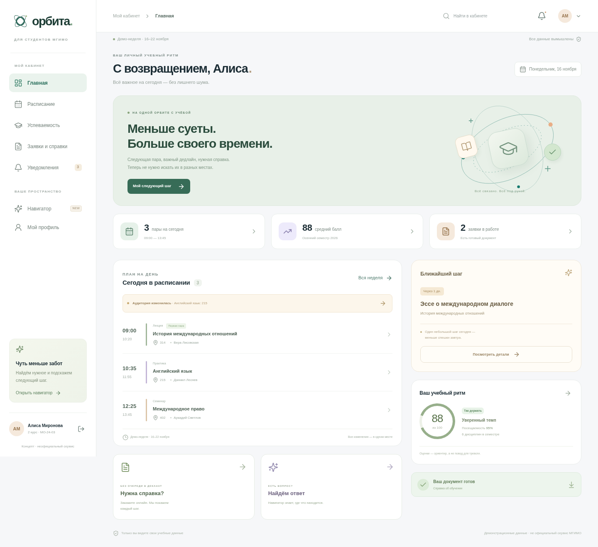
02-dashboard.png · реальный браузер Chromium · вымышленные данные
03-schedule.png · реальный браузер Chromium · вымышленные данные

04-grades.png · реальный браузер Chromium · вымышленные данные

05-requests.png · реальный браузер Chromium · вымышленные данные

06-mobile.png · реальный браузер Chromium · вымышленные данные

07-second-account.png · реальный браузер Chromium · вымышленные данные

08-planner-desktop.png · реальный браузер Chromium · вымышленные данные
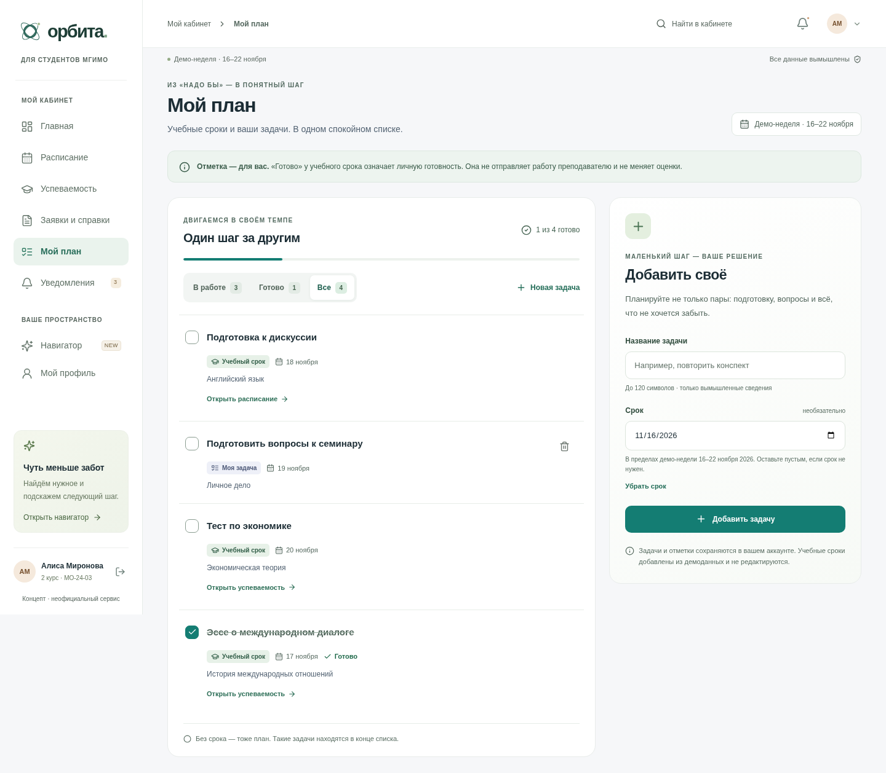
09-planner-mobile.png · реальный браузер Chromium · вымышленные данные
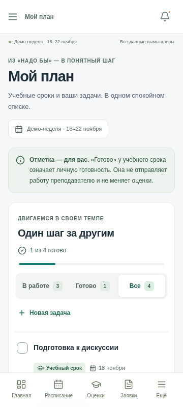
10-action-mobile.png · реальный браузер Chromium · вымышленные данные
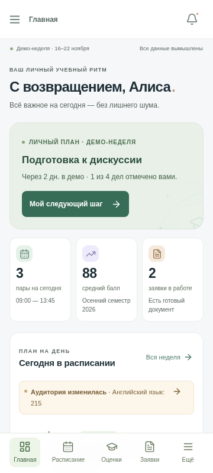
11-audit-archive.png · реальный браузер Chromium · вымышленные данные
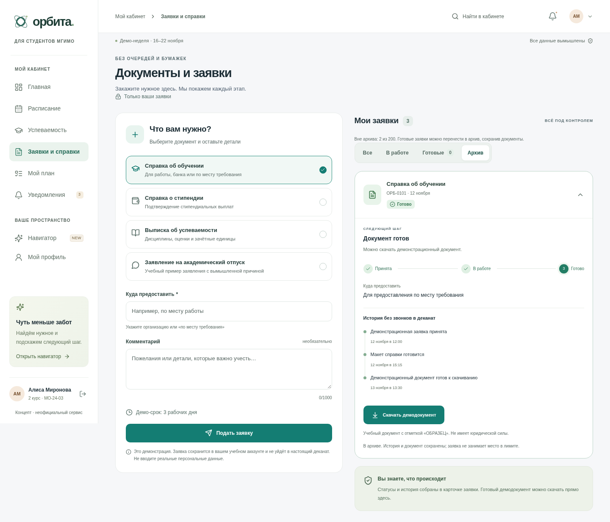
12-audit-assessment-mobile.png · реальный браузер Chromium · вымышленные данные
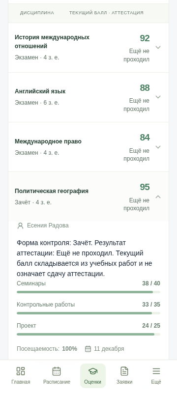
13-audit-navigator.png · реальный браузер Chromium · вымышленные данные
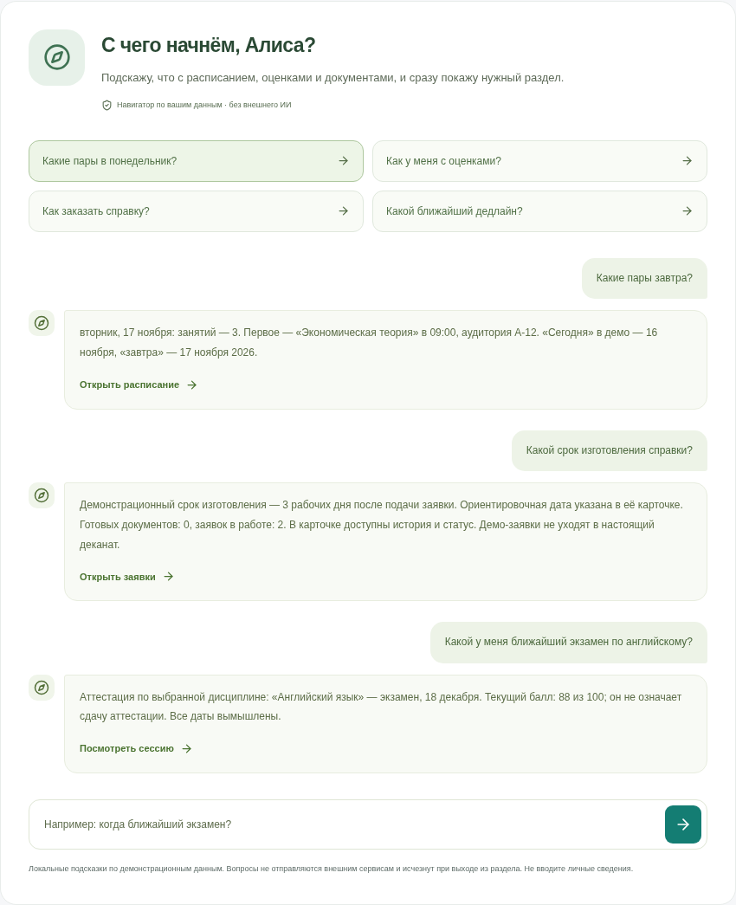
14-campus.png · реальный браузер Chromium · вымышленные данные
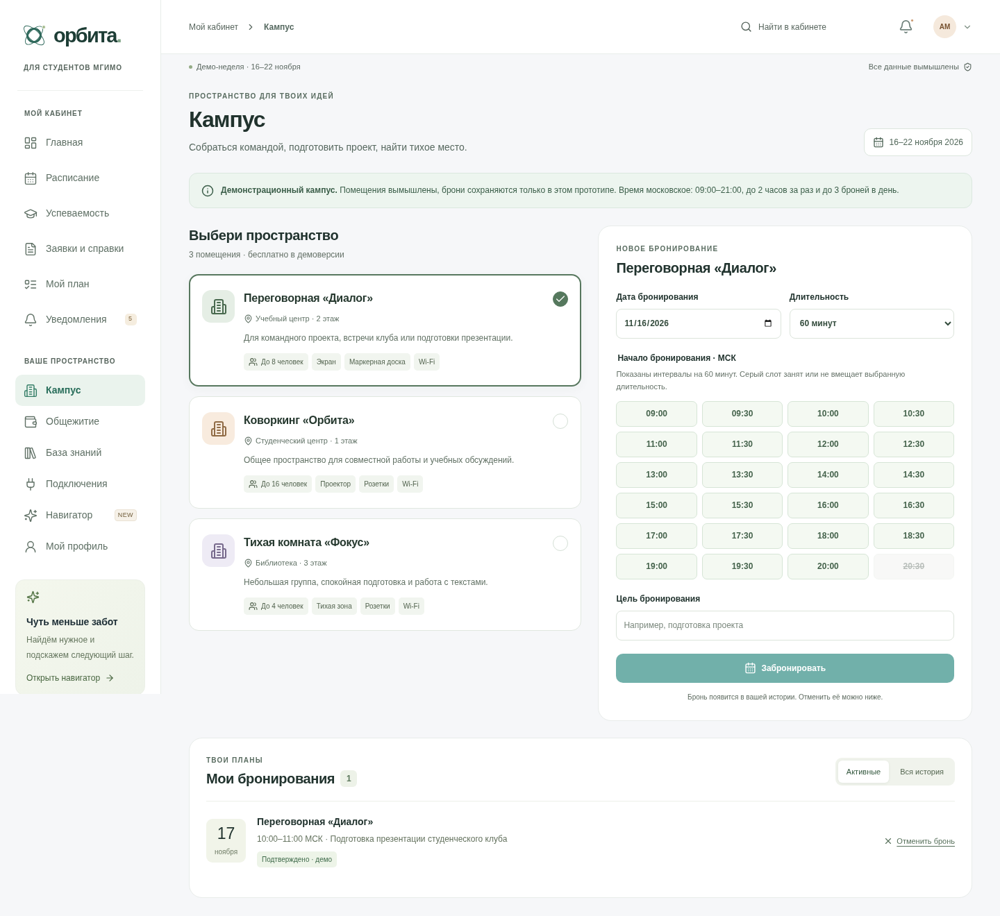
15-housing.png · реальный браузер Chromium · вымышленные данные
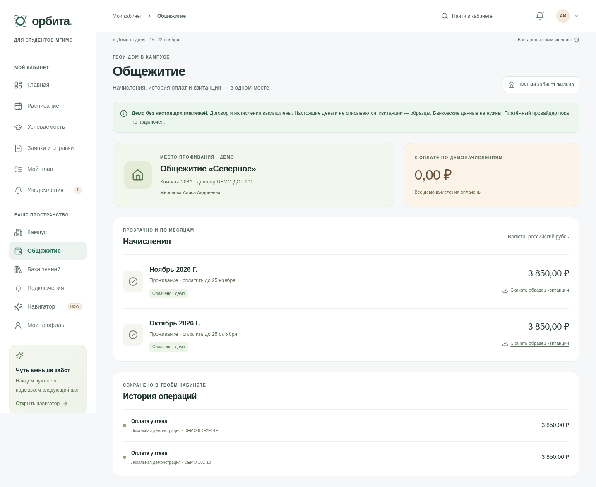
16-knowledge.png · реальный браузер Chromium · вымышленные данные
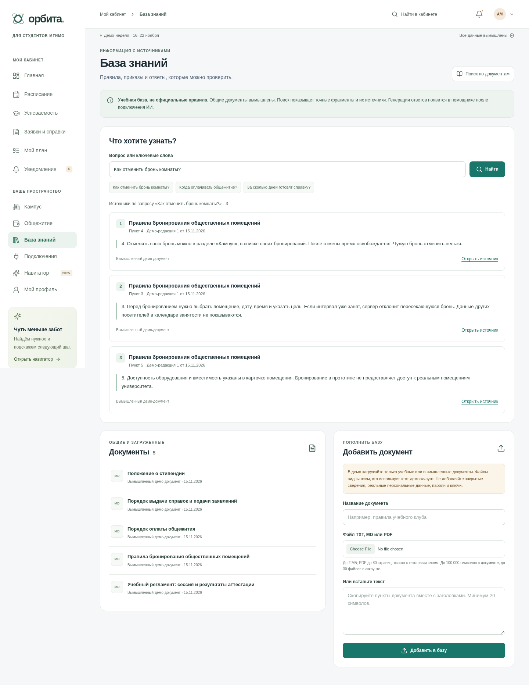
17-connections.png · реальный браузер Chromium · вымышленные данные
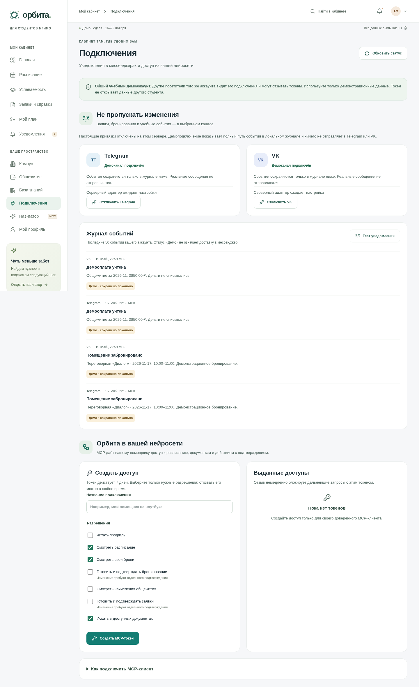
18-assistant-mobile.png · реальный браузер Chromium · вымышленные данные
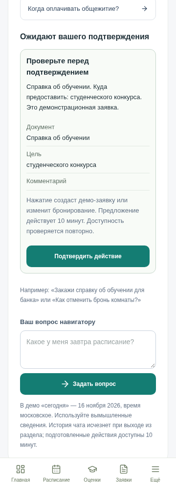